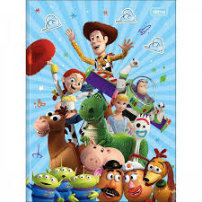
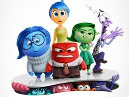
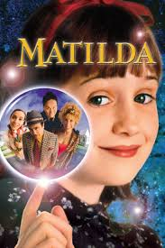
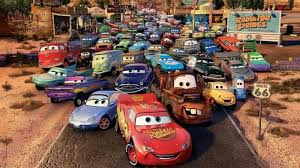

| Título do Filme | Link | Opinião | Capa |
|---|---|---|---|
| toy story | Assistir | Um dos melhores filmes da Disney de todos os tempos é Toy Story, o tão adorado filme sobre brinquedos. No entanto, esta não é uma simples longa-metragem sobre brinquedos: ensina-nos a crescer, a sermos melhores pessoas e, sobretudo, a acreditar em nós mesmos. |  |
| Divertidamente | Assistir | Com um salto temporal, Riley se encontra mais velha, passando pela tão temida adolescência. Junto com o amadurecimento, a sala de controle também está passando por uma adaptação para dar lugar a algo totalmente inesperado: novas emoções. |  |
| Matilda | Assistir | Matilda é uma criança brilhante que cresceu ignorada pelos pais, a ponto de esquecerem de matriculá-la na escola. Quando a menina descobre que possui poderes mágicos e seu pai a manda estudar, ela precisa proteger os colegas da malvada diretora. |  |
| Carros | Assistir | Ao viajar para a Califórnia, o famoso carro de corridas Relâmpago McQueen se perde e vai parar em Radiator Springs, uma cidadezinha na Rota 66. Ele conhece novos amigos e aprende lições que mudam sua forma de encarar a vida. |  |